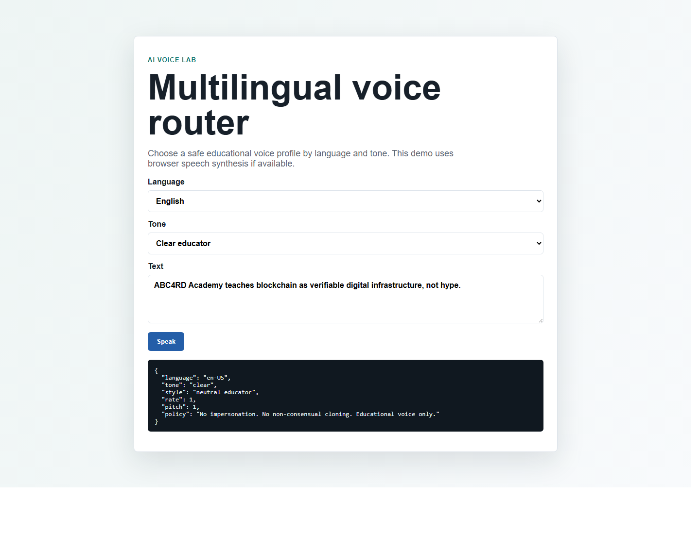
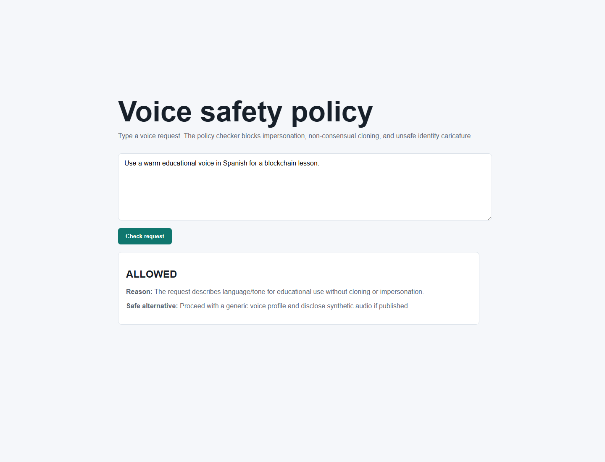
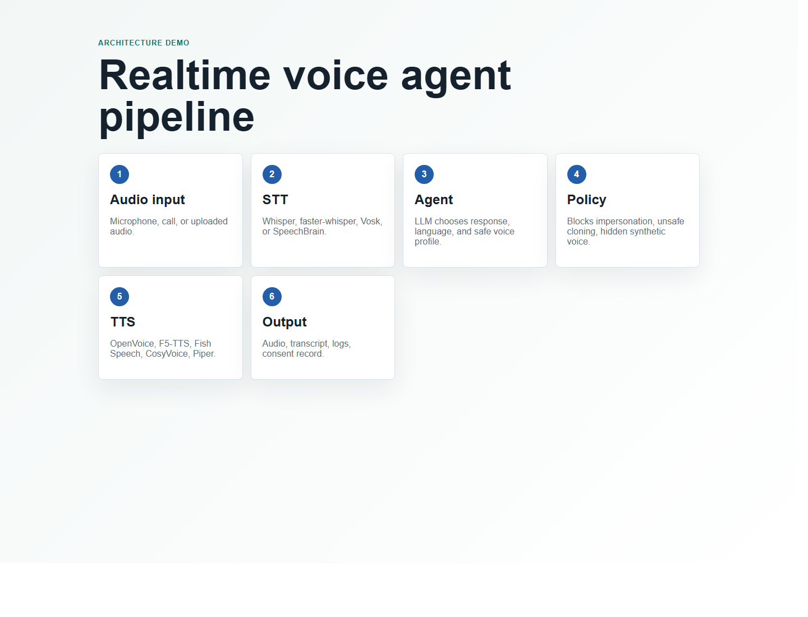

Multilingual Voice Router
Choose language, tone, and learner context. The demo uses browser speech synthesis when available.
Open DemoThree local examples for multilingual voice routing, responsible voice safety, and realtime voice-agent architecture.

Choose language, tone, and learner context. The demo uses browser speech synthesis when available.
Open Demo
Interactive policy gate for consent, identity, impersonation, cloning, and respectful multilingual use.
Open Demo
A clear architecture map: speech-to-text, agent reasoning, policy gate, text-to-speech, and output.
Open Demo